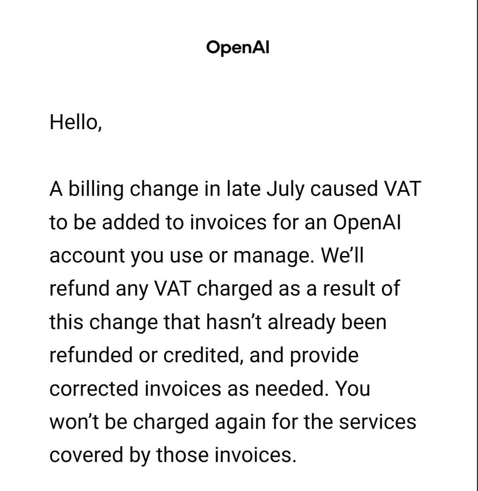
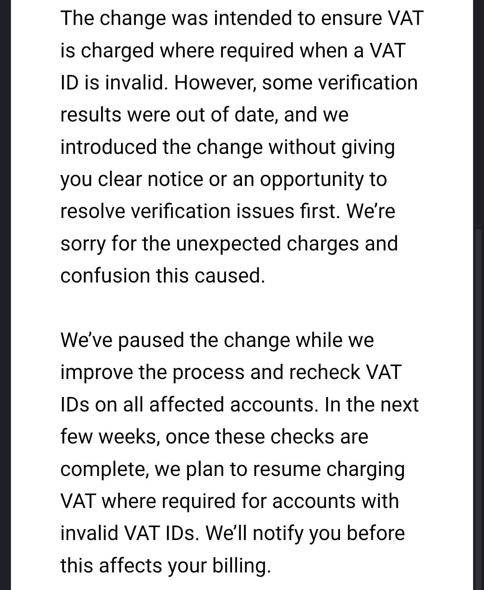
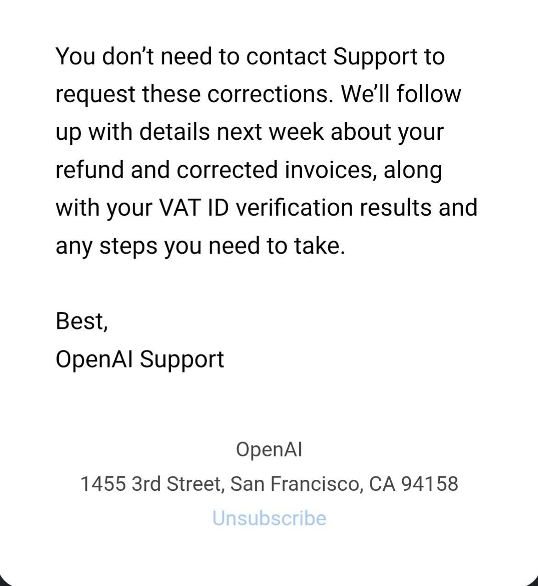

Mail z San Francisco
Kanonical: ten adres. Kopia na FB: zobacz post na Facebooku.
Dostałem maila z San Francisco. Najwyraźniej coś poszło nie tak. Nie napisali oczywiście: „Słuchajcie, daliśmy ciała z VAT-em”. To byłoby zbyt proste. Napisali za to, że „zmiana w systemie rozliczeń pod koniec lipca spowodowała doliczenie VAT-u do faktur”. Czyli wiecie. Nie człowiek. Nie decyzja. Zmiana spowodowała.
Potem jest jeszcze lepiej: „Zmiana miała zapewnić naliczanie VAT-u tam, gdzie jest wymagany, gdy numer VAT jest nieprawidłowy. Jednak część wyników weryfikacji była nieaktualna i wprowadziliśmy zmianę bez jasnego powiadomienia oraz bez dania możliwości rozwiązania problemów z weryfikacją”. Piękne. To jest taki korporacyjny sposób powiedzenia: „System uznał, że twój VAT jest zły, ale system sam miał stare dane, a my odpaliliśmy to zanim daliśmy ci szansę cokolwiek wyjaśnić”.
Ale spokojnie. „Przepraszamy za nieoczekiwane opłaty i zamieszanie”. Zamieszanie. Uwielbiam to słowo.



Największa firma od AI. Przepotężne modele GPT. Najmocniejsza Sztuczna Inteligencja.
A poległa na polskim VAT-cie.